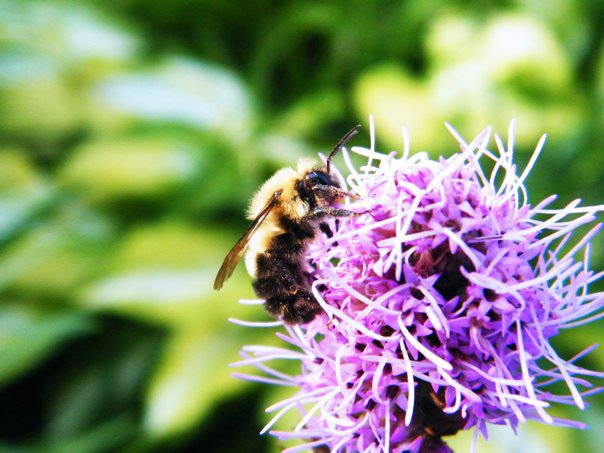
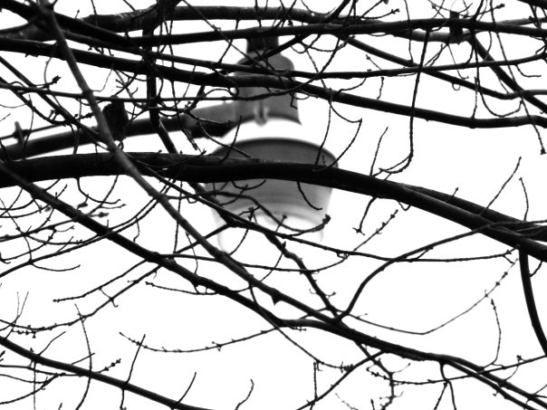

in memory of
Brian Thomas Sultzman
november 25, 1991 - august 14, 2013
with love, by Zach Schneider
with love, by Zach Schneider
friend, brother, son
photographer, designer, musician
seeker, lover, dreamer
photographer, designer, musician
seeker, lover, dreamer
Photography



Music
- Flower Dress
Update Required
To play the media you will need to either update your browser to a recent version or update your Flash plugin.
Memories
Zach Schneider
Life goes on. Life goes on and sometimes good people just don't make it. You're in middle school staying up all night playing Zelda and then you're in high school driving around aimlessly and then you're in college and he's gone at 21. All of the answers just seem so hollow in the face of something like this. God loves everybody but things here just get so broken that people can't handle it anymore sometimes. I guess life still goes on anyway.Rip Brian Sultzman.
Jennifer Baker
What can I even say? My simple words cannot begin to express my despair. Brian, you were a light in my life. We laughed and cried together (more laughter, of course) and our last visit had me in stitches. I am so glad that God allowed our lives to cross. I'm glad that you were a silly, slightly annoying student in my math class. I'm glad that when you came to visit we could smell your cigarette remnants for days, even tho I gave you a hard time about it. I'm glad that when you were over, you would stay so late I was falling asleep on you. I'm glad that you always drank that stupid diet Coke and when I insisted you eat some home-cooked food, you so firmly refused. I'm glad you made the slide show for the class of 2012 and you left off my own daughter's name. I'm glad you created a lovely logo for my business even tho you wanted it your way more than mine. I'm glad that we took that quirky picture at your junior-senior banquet; now I have to get a copy of it, if I can even remember who took it. I'm glad you poured your heart out to me over your passions and struggles; its with great honor and humility that you found me worthy. May you rest in glory now. May you know how deeply you are loved and how passionately you will be missed. I'm glad I got one last hug. And I will always have my iPod inscribed with "Jennifer Baker is a great teacher and friend - Brian." You got me on that one. I love you Brian Thomas!!Jesse Baldwin
I love you very much Brian Sultzman. I am deeply sorry about what has happened. You have been my best friend since 7th grade, my date at Senior Prom, and out of all of our classmates, you were the only one that kept in constant contact and that means the world to me. You could make me laugh until I cried. We were just joking about the My Little Pony convention the other day... I'm so sorry for every text that I left sitting in my inbox and every phone call that I was too busy to take. Sometimes the world wasn't a very nice place for you, and you were very misunderstood and judged by a lot people, but you are in a much more accepting place now. You were such an amazing and talented young man. Your music touched hundreds. You will always have a place in my heart as my best friend. I love you and I will miss you always.Brian Wallace
I hope the light is clear thereI hope the air is fair there
I hope you are loved dear there
I hope you are still rare there
Save us a seat, ok?